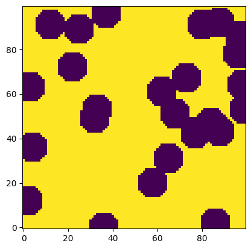
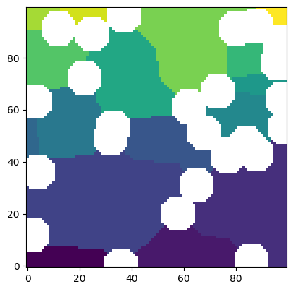
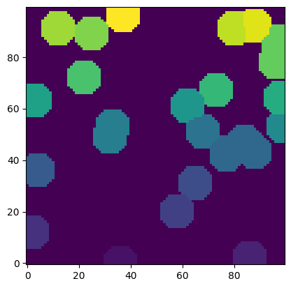
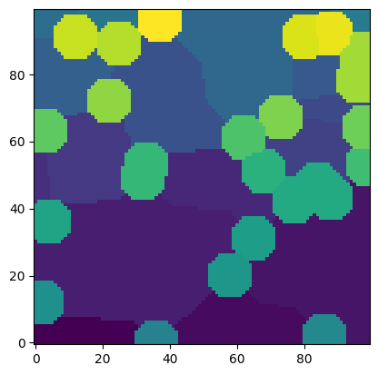

regions_to_network#
The regions_to_network function is part of the snow2 network extraction process. This function analyzes an image of labeled regions, such as that produced by a watershed segmentation, and extracts topological connections and geometric properties. The inner workings of this function are described by Gostick. To summarize, the function analyzes one region at a time, dilates that regions to see what other regions it is neighbors with to establish topology, then analyzes the distance transform within that region to determine geometric properties.
import matplotlib.pyplot as plt
import numpy as np
import porespy as ps
np.random.seed(13)
im = ps.generators.overlapping_spheres([100, 100], r=7, porosity=0.7)
plt.imshow(im, origin='lower', interpolation='none');

print(ps.networks.regions_to_network.__doc__)
Analyzes an image that has been partitioned into pore regions and extracts
the pore and throat geometry as well as network connectivity.
Parameters
----------
regions : ndarray
An image of the material partitioned into individual regions.
Zeros in this image are ignored.
phases : ndarray, optional
An image indicating to which phase each voxel belongs. The returned
network contains a 'pore.phase' array with the corresponding value.
If not given a value of 1 is assigned to every pore.
voxel_size : scalar (default = 1)
The resolution of the image, expressed as the length of one side of a
voxel, so the volume of a voxel would be **voxel_size**-cubed.
accuracy : string
Controls how accurately certain properties are calculated. Options are:
========== ============================================================
Value Description
========== ============================================================
'standard' Computes the surface areas and perimeters by simply counting
voxels. This is *much* faster but does not properly account
for the rough voxelated nature of the surfaces.
'high' Computes surface areas using the marching cube method, and
perimeters using the fast marching method. These are
substantially slower but better account for the voxelated
nature of the images.
========== ============================================================
porosity_map : None
This is not supported for this version of the function.
Returns
-------
net : dict
A dictionary containing all the pore and throat size data, as well as
the network topological information. The dictionary names use the
OpenPNM convention (i.e. 'pore.coords', 'throat.conns').
Notes
-----
The meaning of each of the values returned in ``net`` are outlined below:
'pore.region_label'
The region labels corresponding to the watershed extraction. The
pore indices and regions labels will be offset by 1, so pore 0
will be region 1.
'throat.conns'
An *Nt-by-2* array indicating which pores are connected to each other
'pore.region_label'
Mapping of regions in the watershed segmentation to pores in the
network
'pore.local_peak'
The coordinates of the location of the maxima of the distance transform
performed on the pore region in isolation
'pore.global_peak'
The coordinates of the location of the maxima of the distance transform
performed on the full image
'pore.geometric_centroid'
The center of mass of the pore region as calculated by
``skimage.measure.center_of_mass``
'throat.global_peak'
The coordinates of the location of the maxima of the distance transform
performed on the full image
'pore.region_volume'
The volume of the pore region computed by summing the voxels
'pore.volume'
The volume of the pore found by as volume of a mesh obtained from the
marching cubes algorithm
'pore.surface_area'
The surface area of the pore region as calculated by either counting
voxels or using the fast marching method to generate a tetramesh (if
``accuracy`` is set to ``'high'``.)
'throat.cross_sectional_area'
The cross-sectional area of the throat found by either counting
voxels or using the fast marching method to generate a tetramesh (if
``accuracy`` is set to ``'high'``.)
'throat.perimeter'
The perimeter of the throat found by counting voxels on the edge of
the region defined by the intersection of two regions.
'pore.inscribed_diameter'
The diameter of the largest sphere inscribed in the pore region. This
is found as the maximum of the distance transform on the region in
isolation.
'pore.extended_diameter'
The diamter of the largest sphere inscribed in overal image, which
can extend outside the pore region. This is found as the local maximum
of the distance transform on the full image.
'throat.inscribed_diameter'
The diameter of the largest sphere inscribed in the throat. This
is found as the local maximum of the distance transform in the area
where to regions meet.
'throat.total_length'
The length between pore centered via the throat center
'throat.direct_length'
The length between two pore centers on a straight line between them
that does not pass through the throat centroid.
Examples
--------
`Click here
<https://porespy.org/examples/networks/reference/regions_to_network.html>`__
to view online example.
regions#
This is the watershed segmentation of the image, presumably computed by ps.filters.snow_partitioning but could actually be any watershed image.
snow = ps.filters.snow_partitioning(im)
plt.imshow(snow.regions/im, origin='lower', interpolation='none');

net1 = ps.networks.regions_to_network(regions=snow.regions)
The regions_to_network functions returns dict containing all the network information in OpenPNM format:
for item in net1.keys():
print(item)
throat.conns
pore.coords
pore.all
throat.all
pore.region_label
pore.phase
throat.phases
pore.region_volume
pore.equivalent_diameter
pore.local_peak
pore.global_peak
pore.geometric_centroid
throat.global_peak
pore.inscribed_diameter
pore.extended_diameter
throat.inscribed_diameter
throat.total_length
throat.direct_length
throat.perimeter
pore.volume
pore.surface_area
throat.cross_sectional_area
throat.equivalent_diameter
phases#
Optionally it is possible to perform a multiphase extraction, by passing an image with each phase labelled as follows:
snow2 = ps.filters.snow_partitioning(~im)
plt.imshow(snow2.regions, origin='lower', interpolation='none');

We can manually combine these two watersheds:
ws = snow.regions + (snow2.regions + snow.regions.max())*~im
plt.imshow(ws, origin='lower', interpolation='none');

Now we can send this combined watershed image, along with an image with each phase labelled as 1 and 2 to regions_to_network:
net2 = ps.networks.regions_to_network(regions=ws, phases=im.astype(int)+1)
for item in net2.keys():
print(item)
throat.conns
pore.coords
pore.all
throat.all
pore.region_label
pore.phase
throat.phases
pore.region_volume
pore.equivalent_diameter
pore.local_peak
pore.global_peak
pore.geometric_centroid
throat.global_peak
pore.inscribed_diameter
pore.extended_diameter
throat.inscribed_diameter
throat.total_length
throat.direct_length
throat.perimeter
pore.volume
pore.surface_area
throat.cross_sectional_area
throat.equivalent_diameter
Both net1 and net2 have 'pore.phase' and 'throat.phases', but the difference is that in net1 the values are all 1 since only a single phase was presents, while in net2 these arrays contain boths 1’s and 2’s:
net1['pore.phase']
array([1, 1, 1, 1, 1, 1, 1, 1, 1, 1, 1, 1, 1, 1, 1, 1])
net2['pore.phase']
array([2, 2, 2, 2, 2, 2, 2, 2, 2, 2, 2, 2, 2, 2, 2, 2, 1, 1, 1, 1, 1, 1,
1, 1, 1, 1, 1, 1, 1, 1, 1, 1, 1, 1, 1, 1, 1])
These two arrays are used by the label_phases function, which takes that information and creates actual labels that can be used in OpenPNM.
voxel_size#
This is the voxel size of the image, as in the length of one side of a voxel. Typical microtomography images are in the range of 1-5 um per voxel. NanoCT can be as low as 16 nm per voxel. FIB-SEM might be 4 nm per voxel. Note that all properties returned from the snow2 function, like ‘pore.volume’ will be in the same units are this value. It is strongly recommended to use SI, which is assumed in OpenPNM for most of the fluid property calculations.
accuracy#
This argument can either take the value of 'high' or 'standard', with standard being the default. It is not recommended to use 'high' since this uses some rather slow functions to measure the surface areas and perimeters. The increase in accuracy is basically futile since (a) the image has already been reduced to a coarse voxelization and (b) the pore network abstraction discards information about the actual microstructure in exchange for speed, so spending ages on the extraction step would undermine this purpose.